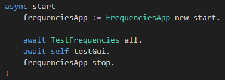
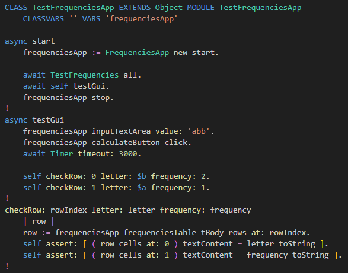
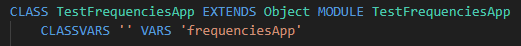
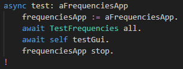
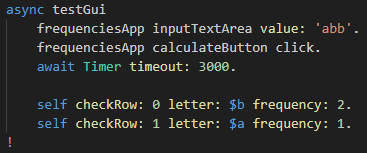
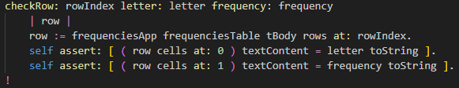
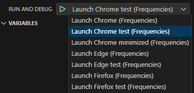
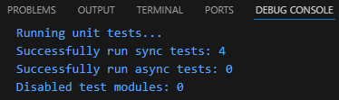

Testing - GUI
All SmallJS GUI (client) example apps have automated GUI testing
that can be copied and customised for your apps.
Browser apps have automated testing for browsers: Chrome, Edge and Firefox.
Automated testing can be started from VSCode by selecting the desired configuration.
The script build.sh first builds the app and then runs unit and GUI tests.
Let's now create GUI tests for our app FrequenciesApp .
Calling GUI tester
First the class
FrequenciesApp must be able to call the GUI test.
In the file
./src/FrequenciesApp.st, add the flowing lines at the end of the method
start :
self testMode ifTrue: [
TestFrequenciesApp new test: self ].
The resulting method should look like this:

After normal app startup, the added lines check if the app was started in test mode.
If so, a new GUI tester
TestFrequenciesApp is created,
and its method
test: is called with the running app as the argument.
Access to app variables
The tester class will need access to the variables in the app.
Since variables in ST are always private, we need to create getters for them.
In the file
./src/FrequenciesApp.st, add the following methods to the end of the file:
"Accessing - Used by tests"
inputTextArea
^ inputTextArea.
!
calculateButton
^ calculateButton.
!
frequenciesTable
^ frequenciesTable.
!
So these methods just return instance variables.
This might look a bit verbose, but it keeps the ST language simple,
and you can always add functionality inside getters without changing calling code.
GUI tester class
Now we can create the GUI tester class:
TestFrequenciesApp .
In the folder
./src/Test, rename the file
TestCounterApp.stx to
TestFrequenciesApp.st .
Then replace its contents with the following code:
CLASS TestFrequenciesApp EXTENDS Object MODULE TestFrequenciesApp
CLASSVARS '' VARS 'frequenciesApp'
async test: aFrequenciesApp
frequenciesApp := aFrequenciesApp.
await TestFrequencies all.
await self testGui.
!
async testGui
frequenciesApp inputTextArea value: 'abb'.
frequenciesApp calculateButton click.
await Timer timeout: 3000.
self checkRow: 0 letter: $b frequency: 2.
self checkRow: 1 letter: $a frequency: 1.
!
checkRow: rowIndex letter: letter frequency: frequency
| row |
row := frequenciesApp frequenciesTable tBody rows at: rowIndex.
self assert: [ ( row cells at: 0 ) textContent = letter toString ].
self assert: [ ( row cells at: 1 ) textContent = frequency toString ].
!
The resulting class should look like this:

We'll go through it piece by piece below.
Class definition

Note that this class just inherits from class Object, not Test .
So it is not a unit testing class of which test methods are called automatically.
The module name TestFrequenciesApp is the same as for the unit test class.
(The module name and class name are the same here, but that doesn't matter.)
The instance variable frequenciesApp will reference the app to be tested.
Method: test:

First note that this method is async .
Methods that await the outcome of other async methods, must also be async .
This is a design restriction (flaw) of JS, that cannot be circumvented in SmallJS, alas.
The method first saves a reference to the app being tested.
Then it executes all unit tests through the class TestFrequencies we created earlier.
Note: The class method all executes all unit tests that were compiled,
not only the ones in the class TestFrequencies .
Then the testGui method is called, the main purpose of this class.
Lastly the app is stopped, also closing the browser.
Method: testGui

This method is also async because it await-s a timer.
First the test string 'abb' is put into the input HTML control on the page.
Then the [Calculate] button is clicked.
Waiting for 3 seconds gives the app time to calculate and display the results.
(This time can be much shorter if no humans watch along :)
Now the frequencies table is checked if it contains the expected results,
using the following utility method.
Method: checkRow:...

This method checks if a row in the frequencies table
contains the expected letter and frequency results.
First it fetches a row from the frequencies table body by index.
From that row, it asserts that the 1st cell is equal to the agument letter,
and asserts that the 2nd cell is equal to the agument frequency.
Now our code is complete and the GUI test can be run.
Running
To run the app in GUI testing mode, we have to select a test configuration.
In VSCode, in the 'RUN AND DEBUG' pane, select a 'test' configuration
for a browser you have installed:

This will start the app with ?test appended to the URL,
causing the method testMode (see above) to return true .
In VSCode, now press [F5] to start the app in test mode.
If all goes well, a bowser will be launched and the GUI tests class will run automatically,
filling the input, calculate results and close the browser after 3 seconds.
(On MacOS the browser will not close.)
Back in VSCode, in the bottom pane, the tab 'DEBUG CONSOLE' should look like this:

This is the output from (also) running the unit tests, same as earlier.
If a GUI test assert: fails,
VSCode with break into the debugger the same way as with the unit tests.
You can try this by changing one of the expected values in the method testGui .
Congratulations, you've made a fully functional and tested SmallJS browser app!
Now let's automate the build & test proces, for quick regression testing...